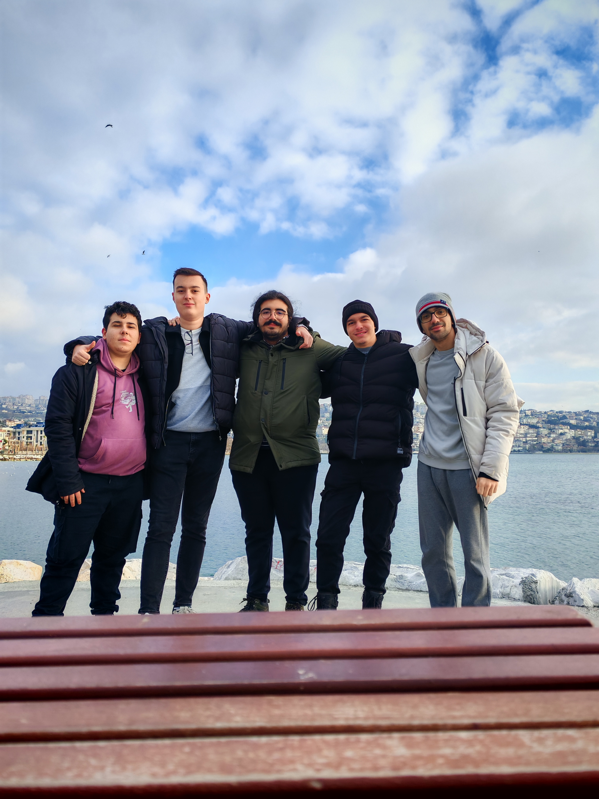

Merhaba, Ben
Sakarya Üniversitesi'nde 1. sınıf öğrencisiyim. Ağırlıklı olarak C#, C++ ve web teknolojileri üzerinde çalışmaktan yazılım algoritmalarına kadar geniş bir yelpazede projeler geliştirerek teknoloji dünyasında kendimi sürekli yeniliyorum.
Boş zamanlarımda oyun oynamayı, yeni teknolojileri keşfetmeyi ve kod yazmayı seviyorum. Futbol ile içli dışlıyım ve sık sık maç izlerim. Bunun haricinde video oyunlarını çok seviyorum, özellikle gizlilik ve parkur türündeki oyunlara ilgi duyuyorum. Ayrıca, yeni teknolojileri takip etmek ve yazılım geliştirme alanında kendimi sürekli geliştirmek benim için büyük bir tutku.
En sevdiğim oyunlar arasında "RDR II", "Cities Skylines", "Forza Horizon 5", "Football Manager 24" gibi oyunlar bulunuyor. Bu oyunlar her ne kadar farklı tür oyunlar olsa da her biri beni derinden etkiledi. Oyun dünyasında sürekli yeni deneyimler arıyorum ve bu tür oyunları keşfetmekten büyük keyif alıyorum.
